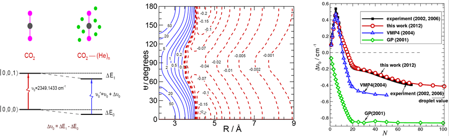
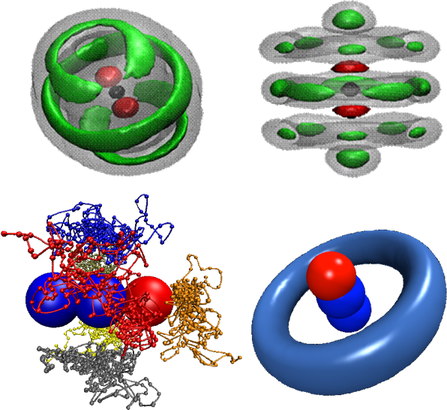
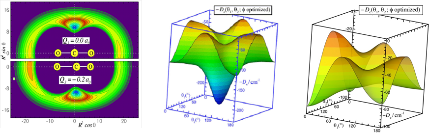

Current Research Topics include:
Developing path-integral Monte-Carlo (PIMC) methods to simulate nanoscale superfluid behaviour in weakly bound clusters in order to improve our understanding of quantum solvation and microscopic superfluidity. Recently, we developed an accurate and computationally inexpensive “potential difference” PIMC method for predicting the vibrational frequency shifts of chromophore molecules embedded in weakly bound He or H2 clusters. These shift predictions have allowed experimentalists to assign IR transitions which were observed for large clusters in high resolution spectroscopy, and to provide detailed information on cluster structure and dynamics. In order to explore the onset of superfluidity, we applied two-fluid and dipole-dipole correlation function models to obtain the superfluid fraction and effective moments of inertia for a range of cluster sizes. For H2 clusters, we determined the “superfluid response” in collaboration with the experimental group of A.R.W. McKellar. In the future, we plan to develop new theoretical methods to bridge the gap between small clusters and the nano-droplet size regions, and to explore the approach to limiting behaviour of physical properties for very large cluster sizes.
 Developing accurate intermolecular potential energy surfaces for weakly bound systems. Recently, we have determined new muti-dimensional and analytic Morse/Long-Rang (MLR) potentials for weakly bound system, which incorporate theoretically known long-range inverse-power behaviour and allows parameters of that radial function to vary with angle and stretch-vibration motion of monomer. The MLR model has clear physical meaning, and it is possible to morph our potentials to improve agreement with experimental spectra. The compact explicit analytic form of our potentials will facilitate their use for future applications. We also developed a new “hindered rotor” averaging method to allow reduced-dimension treatments of para-H2-(molecule) complexes, and found that para-H2 should not be treated as being spherical, as was usually done in traditional treatments of these systems. In the future, we plan to develop new muti-dimensional MLR-type potential models for real chemical reactions and for complicated intermolecular systems.
Theoretical Simulating the Vibrational Spectra of the Secondary Organic Aerosol with Hydrogen Bonds Secondary organic aerosols, as an important part of atmospheric aerosol, have a great influence on the climate change，environmental pollution and human health, and have been given great attention from research scientists. Spectroscopic characterization of secondary organic aerosols is an important experimental method to investigate their components, architecture, size, shape and other intrinsic particle properties. However, due to the intrinsic complexes of the secondary organic aerosols, the observed experimental spectra are very hard to be assigned. Usually, the secondary organic aerosols have hydrogen bonds, which are easy to form dynamic hydrogen-bond network during their condensation, and have non-negligible nuclear quantum effects. For this research, based on the hot topic of atmospheric chemistry, secondary organic aerosols with hydrogen bonds are selected as our research objects. A path-integral molecular dynamics (PIMD) code will be developed in this project. With our own ab initio-based representation of the underlying inter- and intra- molecular interactions and forces, it will be applied in simulating the structure and dynamics of hydrogen-bond network in second organic aerosols to investigate the quantum effects with temperature dependent. Combining with first perturbation theory and central molecular dynamics method, PIMD will be used in simulating the vibrational spectra of the secondary organic aerosol, and help experimentalists to assign their observations, and in addition to provide the basic data for future analyzing the remote spectroscopic information.
Vibrational Probe of Protein Conformational Dynamics Protein exists as an ensemble of conformers; however, its biological function is often carried out through higher energy states. Ligand binding and the catalytic process itself can significantly shift the relative populations of protein conformation states. An understanding of the mechanism of protein conformational inter-conversion is important to elucidating the biological functions of enzymes. Vibrational spectroscopy of probe molecules, strategically placed inside a protein, can provide detailed information on the local electrostatic field, and can help characterize protein conformational heterogeneity. The aim of this proposal is to develop theoretical and computational techniques to accurately determine one and two dimensional vibrational spectra of functional groups inside enzymes and small peptides in solution. The primary goal is to understand the dynamic conformational changes along the reaction pathway of enzymatic catalysis in ketosteroid isomerase and dihydrofolate reductase, and the protein conformational heterogeneity in the substrate-protein complex of lactate dehydrogenase. To achieve these goals, we propose to employ combined quantum mechanical and molecular mechanical (QM/MM) methods to represent the potential energy surface of the probe molecule and to model intermolecular interactions through molecular dynamics simulations. Furthermore, we plan on determining one and two dimensional vibrational spectra based on the time evolution of molecular dipole moment and transition moment of the probe molecules from QM/MM simulations. We also propose to use a perturbative approach to efficiently determine the instantaneous vibrational frequencies of probe molecules along the dynamic trajectories. The proposed research brings together the expertise of two leading research groups in their fields, and the method developed in this work can be applied to other chemical and biochemical systems. The understanding of protein conformational states will likely to be generally applicable to other enzymes.